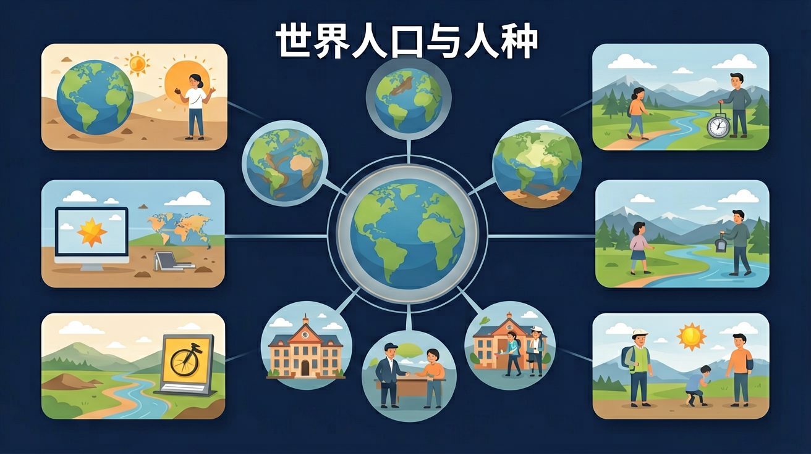

运用地图和相关资料，描述并简要归纳世界人口数量变化和人口空间分布特点。

🎯 能说出世界三大人种主要分布区
🎯 能分析人口自然增长率与经济发展的关系
🎯 能判断人口密度图的疏密含义
❓ 为什么欧洲人鼻子那么高？
❓ 非洲那么热为啥人还那么黑？
❓ 人口多的国家就一定强吗？
学完这一课，这些问题你都能自信地回答。
下列哪项直接影响人口密度？
印第安人属于哪个人种？
选择或输入后，这节课会围绕你的问题展开。
学习「世界人口与人种」时，第一步最应该做什么？
先选一个，错了正好暴露你的前概念，我们一起纠正。
世界人口与人种是初中地理的重要内容。运用地图和相关资料，描述并简要归纳世界人口数量变化和人口空间分布特点。
运用反映人种、语言、宗教、习俗等内容的图文资料，描述世界文化的丰富多彩，树立尊重世界文化多样性的意识。
学习路径：明确概念→掌握方法→情境练习→反思纠错。
能够观察、描述地球上人口、城乡、文化等人文环境要素的基本状况，以及人类活动对自然环境的影响。
点击时代/图层按钮切换地图；悬停边界，点击城市标记查看说明。
迁移任务：找一道与「世界人口与人种」相关的练习题或生活情境，用本课方法完整解答一遍。
世界人口分布不均匀：沿海、平原、气候适宜地区较稠密，干旱、高寒、湿热雨林等地区较稀疏。人口问题包括增长、迁移与老龄化等。人种划分是自然特征分类，要树立平等观念，反对种族歧视。
从自然（地形气候水源）与社会经济（交通工农业历史）两方面分析分布。
常见误区：常见误区是只谈自然原因忽视经济，或对人种持偏见。
人口分布稀疏的地区往往是？
1. 东京地铁客流调控：利用人口密度热力图（市中心23区高达15,000人/km²），在早晚高峰实施差异化票价。山手线在7:30-9:00期间对进站乘客收取20%附加费，使每小时客流从12万降至9万人次，这是人口分布知识在城市交通中的直接应用。
2. 新冠疫苗分配算法：WHO根据人口空间分布数据，为非洲54国设计疫苗分发方案。考虑尼日利亚拉各斯（2,100人/km²）与北部沙漠区（4人/km²）的差异，采用"人口密度+交通可达性"双因子模型，使疫苗覆盖率提升37%。
3. 语言学习APP本地化：多邻国（Duolingo）根据全球人口迁移数据调整课程内容。针对美国墨西哥裔聚居区（如加州南部），增加西班牙语教学中的农业词汇；对法国巴黎郊区（非裔人口占18%）则强化商务法语场景，体现人口分布与文化传播的关系。
1. 问题：为什么加拿大90%人口集中在美加边境100公里范围内，而澳大利亚却集中在东南沿海？引导分析：比较两国自然条件的差异点（如加拿大冻土带分布与澳大利亚西部沙漠的形成原因），再思考殖民历史对多伦多vs悉尼等核心城市选址的影响，最后结合当前产业布局（加拿大汽车工业带与澳大利亚矿业分布）进行综合解释。
2. 问题：非洲裔在美国篮球运动员中占比73%，但在游泳项目中仅占2%，这是否能证明人种体质差异？引导分析：先查找美国公共游泳池数量在黑人社区与白人社区的分布差异（底特律黑人区每10万人0.5个泳池vs白人区3.2个），再追溯20世纪种族隔离政策对体育设施投入的影响，最后思考社会经济因素与所谓"天赋"的关联性。
先从一个矛盾现象切入：地球陆地面积1.49亿km²中，90%人口集中在10%的土地上。接着用北纬60°-40°"人口腰带"为例（集中了全球65%人口），引出人口分布的四极：东亚（中国长三角密度达800人/km²）、南亚（恒河平原占印度43%人口）、欧洲西部（莱茵河流域每平方公里超300人）、北美东部（波士华城市带）。然后分析自然因素的决定性作用——亚马逊平原占巴西面积60%却只有5%人口，而青藏高原每平方公里不足2人，说明气候、地形、水源的基础限制。但接着要打破简单决定论：同样位于沙漠带，尼罗河谷地人口密度高达1,500人/km²，而澳大利亚内陆几乎无人，这引出了人类改造能力的关键作用。最后落到动态发展视角：美国"阳光带"迁移（1950-2020年南部人口占比从28%升至40%）、中国"胡焕庸线"东侧人口占比94%的稳定性，说明科技、政策等因素正在重塑但未根本改变分布格局。贯穿始终的核心方法是：读图时先找经纬度参照系，再叠加地形图层，最后用人口密度色阶图验证假设，例如分析法国人口为何既集中又分散——巴黎大都会区占全国19%人口，但全国城市化率80%体现均衡发展。
1. 错误表现：认为"人口密度=人口数量"。学生常将巴西（2.15亿人）和澳大利亚（0.26亿人）直接比较得出巴西人口更多的结论。认知根源在于混淆了绝对数量与分布强度的概念。正确理解应对比两国人口密度（巴西25人/km² vs 澳大利亚3人/km²），结合亚马逊雨林和内陆沙漠对分布的影响，说明澳大利亚人口集中分布在东南沿海的特征。
2. 错误表现：将人种与国籍划等号。看到非洲裔就认定是"非洲人"，忽视美国有13.6%的黑人人口。这种错误源于将生物学特征与社会身份简单对应。正确理解需区分人种（基于肤色、发质等体质特征）与民族/国籍概念，例如巴西作为种族熔炉，其1.2亿混血人口占全国47%，不能简单用三大人种划分。
3. 错误表现：用当前数据线性推演人口增长。有学生认为印度（2023年14.28亿）会永远保持比中国（14.26亿）更快增长。这忽视了生育率变化，印度总和生育率已从1950年的5.9降至2023年的2.0，接近更替水平。正确分析应结合年龄结构（印度中位年龄28岁 vs 中国39岁）和社会经济发展综合判断。
复制提示词到 AI 学伴，生成「世界人口与人种」的示意图或结构提纲；也可以上传你手绘的示意图，请 AI 学伴点评。
复制后可粘贴到 AI 学伴继续对话。
关于人种特征的正确叙述是
分析青藏高原人口集中在河谷地区的原因
关于世界人口与人种的学习，哪种做法最科学？
选一个并查看反馈。
先独立作答，再点选项查看对错与错因。
下列地区中，人口密度最低的是
黑色人种主要分布在
影响人口分布的决定性因素是
世界三大人种中，____人种数量最多
答案：白色
白种人占全球55%左右
人口稠密区多分布在____纬度沿海平原
答案：中低
气候温和适宜居住
✅ 人种无优劣，智力受教育和环境影响
💡 影视作品刻板印象影响
✅ 阿拉伯人属白种人，主要分布在西亚北非
💡 肤色深浅误判
口诀：黄亚黑非白欧美，高冷低热中间肥
类比：人种分布像奶茶店菜单：珍珠奶茶在亚洲，黑糖奶茶在非洲，鲜奶在欧洲
（中考真题）德国人口负增长可能导致
（迁移题）新疆汉族人口增长属于
（情境题）巴西足球队人种构成复杂说明
点击节点跳转到对应章节；可切换布局。